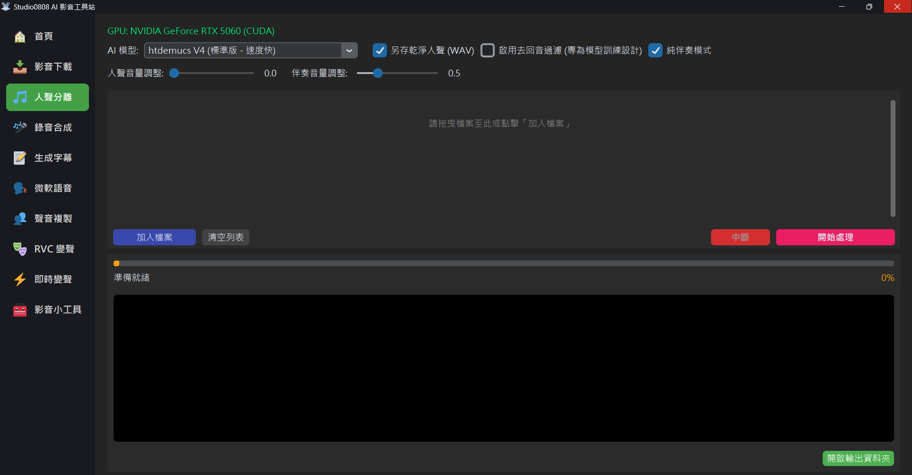

本程式整合了 Meta (Facebook) 開發的頂尖音樂分離模型 Hybrid Transformer Demucs (htdemucs)，為您提供錄音室等級的音軌分離服務。
不同於傳統的 EQ 濾波，AI 模型能真正「聽懂」音樂中的不同樂器，將其完美拆解為：
我們精選了三種最強大的預訓練模型，滿足不同場景需求：
這是 Demucs V4 的標準版本，兼顧了分離品質與處理速度。適合 90% 的使用場景，特別是製作卡拉 OK 伴奏。
Fine-tuned 版本特別針對「保留人聲細節」進行了優化。如果您是為了提取乾聲來進行 AI 翻唱訓練，此模型通常能保留更多高頻細節。
這是基於 MDX-Net 架構的頂級高品質模型。它能提供目前業界頂尖的分離純淨度，特別適合對音質有極高要求的用戶。
這是一個非常專業且常見的問題！Demucs 等「人聲分離」模型的主要任務是「將人聲與背景樂器聲 (BGM) 分開」。
然而，從流行歌曲或影片中分離出來的人聲，通常都帶有強烈的空間混響 (Reverb)、回音 (Echo) 或是和聲 (Chorus)。這是因為歌手在錄音室錄音或後期製作時，混音師故意加上去的「空間化特效」，讓聲音聽起來更飽滿、圓潤。
當您勾選了 「☑️ 啟用去回音過濾」 並聽取產出的 _Vocal_Dry.wav
時，您可能會覺得聲音變得很單薄、甚至有點電音感。這是正常的「錄音室魔法剝奪效應」，原因如下：
要訓練出 S 級完美的變聲或語音克隆模型，最頂級的素材從來都不是流行歌曲 (CD)，而是：
上述素材本身就沒有複雜的背景音樂，且錄音環境相對乾燥。將這類素材丟入系統，經過一次普通的去底噪或去回音，出來的品質將是完美的「零瑕疵乾聲」。
💡 提示：處理後的檔案會自動儲存在 Outputs/Vocals 資料夾中。
A: 深度學習模型需要大量的矩陣運算。如果您使用 NVIDIA 顯示卡 (GPU)，速度通常是 CPU 的 10~50 倍。若您只有 CPU，則需要較長的等待時間。
A: 第一次使用新模型時，程式需要從雲端下載模型權重檔 (約數百 MB)。之後再使用就會非常快了。
A: 這表示您的顯示卡 VRAM 不足。不用擔心，本程式 具備 自動 fallback 機制，偵測到記憶體不足時會自動切換回 CPU 模式繼續完成任務。
A: 可以！從 V2.3 版本開始，本程式 原生整合了 UVR5 的 VR Architecture 頂級去回音模型。
您只需要在介面上勾選 「☑️ 啟用去回音過濾 (專為模型訓練設計)」。系統在分離出人聲後，會自動在背景啟動第二次的 AI
神經網路運算，對人聲進行殘響抽離，最後自動為您輸出完美無瑕的 _Vocal_Dry.wav。這個檔案可以直接丟進 RVC 或 GPT-SoVITS
進行訓練，無須再依賴外部軟體！
本功能基於以下開源技術構建，確保最佳的相容性與效能：